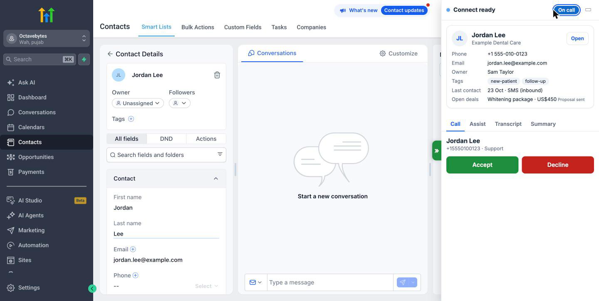
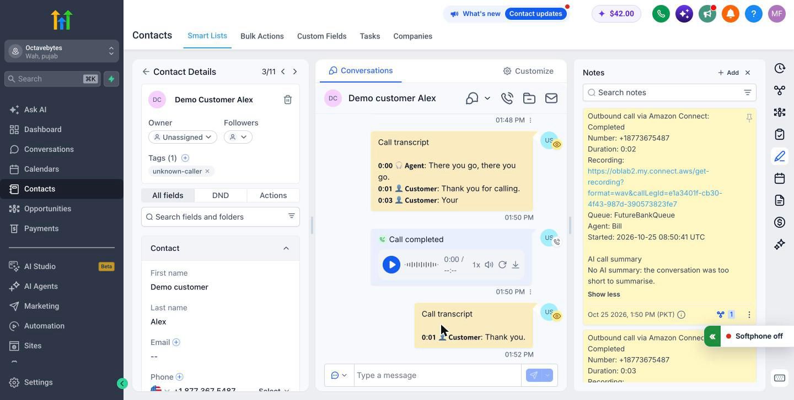
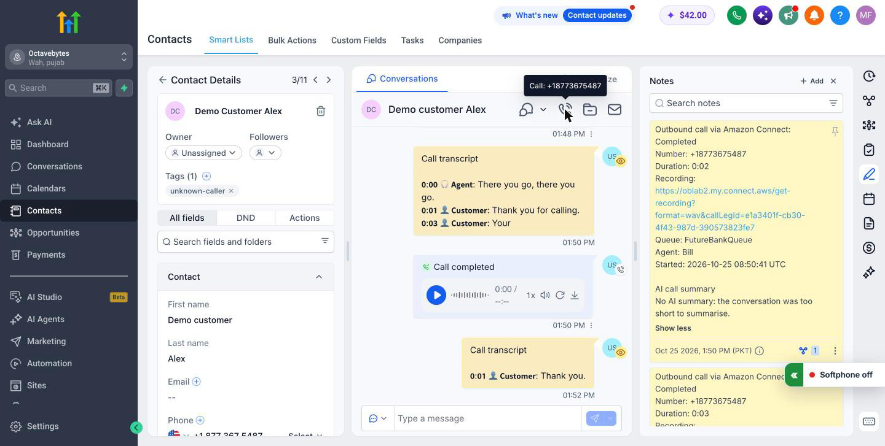

Features
Document version 1.0 · 25 October 2026 · Applies to release v2.0.0
Every feature in release v2.0.0 and its status. Each feature is marked Available (in this release) or Planned (not in this release).
Features that an administrator can switch off are marked "Setting:" with the setting's name. See the settings reference.
Calling in the CRM
| Feature |
What it does |
Status |
| Call panel in GoHighLevel |
A panel on every GoHighLevel page with the call controls, the caller's details and the Assist, Transcript and Summary tabs. It folds away into a small bar at the right edge and opens by itself when a call rings. |
Available |
| Full and compact views |
The full view shows every tab; the compact view is a small card with the call controls only. Agents switch with one button and their choice is remembered. Setting: Starting view of the call panel. |
Available |
| Softphone window |
The Amazon Connect phone runs in its own browser window, opened once from the panel. Keeping it separate means changing GoHighLevel pages never drops a call. |
Available |
| Answer and decline |
Incoming calls ring in the panel and the mini bar with Accept and Decline. |
Available |
| Place calls |
Agents type a number or click a contact's phone icon. Numbers are checked and formatted before dialling. Setting: Agents can place calls. |
Available |
| Choose the outbound queue |
Agents can choose which queue an outbound call uses. Setting: Agent chooses the queue. |
Available |
| Click-to-call on a contact page |
Clicking the phone icon on a contact page dials through Amazon Connect instead of GoHighLevel's own dialler. |
Available |
| Click-to-call in the contacts list |
The same from the phone icon in the contacts list. |
Available |
| Hold, mute, keypad |
Hold / Resume, Mute / Unmute and a keypad for sending digits. Each can be switched off. Settings: Hold and resume, Mute, Keypad (send digits). |
Available |
| Screen pop and caller card |
When a call rings, the matching contact opens and the panel shows the caller's name, owner, last interaction and open deals. Setting: Open the contact when a call comes in. |
Available |
| Contacts for unknown callers |
A number with no contact gets one, named "Unknown caller" with the number, so the agent lands on a real record to rename. Withheld numbers are never created. Setting: Create a contact for unknown callers. |
Available |
| Agent status |
The agent sees and changes their Amazon Connect status (for example Available, Offline) from the panel. The statuses are the ones set up in your Amazon Connect instance. |
Available |
| Missed calls |
A call the agent did not answer shows as "Missed call" and the agent chooses Available to take calls again. Setting: Record missed calls controls whether it is written to the contact. |
Available |
| Recent calls and redial |
The agent's last calls are listed in the panel with a Redial button. |
Available |
| Survives a dropped connection |
If the network or the server restarts, the panel shows "Reconnecting…", keeps the call, and catches up when the connection is back. |
Available |
| Switch the connector off |
One setting removes the call panel for everyone within about a minute; GoHighLevel's own dialler works again. Setting: Connector switched on. |
Available |

Figure: An incoming call with the caller card (sample data).
Call logging and notes
| Feature |
What it does |
Status |
| Note on the contact |
After each call a note with direction, number, duration, queue, agent, start time, disposition, the agent's note and the AI summary. Each part can be switched off. Settings: Write a note on the contact and the Include … settings. |
Available |
| "Call completed" entry |
The native call item in the contact's conversation. Setting: Create the call entry in GoHighLevel. |
Available |
| Transcript comment |
The whole call transcript as one internal comment on the contact. Setting: Post the call transcript. |
Available |
| Written once, even after failures |
Each part of the record is written once. If GoHighLevel is unreachable, the server retries for about three hours, and a restart does not create duplicates. |
Available |
| "Saved to GHL" and refresh |
The panel confirms when the call is saved and, when safe, refreshes the contact page so the new note shows. Setting: Refresh the contact page after a call is saved. |
Available |

Figure: The note written on the contact after a call (sample data).
Recording player
| Feature |
What it does |
Status |
| Recording in the call entry |
The "Call completed" entry carries an audio player with the Amazon Connect recording. It plays only for someone signed in to Amazon Connect with permission to hear recordings, so the connector does not make the recording public. Setting: Attach the recording to the call entry. |
Available |
| Recording link in the note |
The note can carry the same Amazon Connect recording link. Setting: Include the recording link in the note. |
Available |

Figure: The "Call completed" entry with the recording player (sample data).
Live transcript and assistant
| Feature |
What it does |
Status |
| Live transcript |
The conversation appears on the Transcript tab within seconds, with who said what and the caller's sentiment (positive, neutral, negative). Setting: Live transcript. |
Available |
| Amazon Q suggestions |
Amazon Q suggests answers on the Assist tab when the customer asks a question. Agents mark a suggestion helpful or not helpful. Setting: Live suggestions (Amazon Q). |
Available |
| Ask Q |
Agents type a question to Amazon Q and get an answer they can copy. |
Available |
AI call summary
| Feature |
What it does |
Status |
| AI call summary |
A few seconds after an answered call, Amazon Connect's summary of the conversation appears on the Summary tab and is saved to the contact as a comment, in the note and in two contact fields ("Last call summary", "Last call sentiment"). Setting: AI call summary. |
Available |
Wrap-up and dispositions
| Feature |
What it does |
Status |
| Wrap-up after calls |
After a call the agent chooses a disposition and adds a note, then presses Save & Done. Setting: Wrap-up after calls. |
Available |
| Disposition lists |
Separate lists for inbound and outbound calls, edited in the admin console. The server refuses a value that is not on the list. Settings: Dispositions for inbound calls, Dispositions for outbound calls. |
Available |
| Required disposition or note |
The administrator can require a disposition, a note, or both before the call is finished. Settings: A disposition is required, A note is required. |
Available |
| AI disposition suggestion |
Suggesting a disposition with AI. |
Planned |
Seats and licence
| Feature |
What it does |
Status |
| Concurrent seats |
Each open softphone window uses one seat. When all seats are in use, the next agent is told plainly and can try again when a colleague closes theirs. |
Available |
| Seats are not lost to accidents |
A seat is kept for 15 minutes if the agent was on a call and the connection dropped, so they get it back. A closed window frees its seat after about 45 seconds; a silent idle window after about 3 minutes. |
Available |
| Offline licence |
The licence is a signed file checked by your own server. Nothing is sent to OctaveBytes. |
Available |
| Expiry notices and grace |
Agents and administrators are told before the licence ends. Paid licences have a grace period so calls keep working; calls in progress are never cut. |
Available |
Admin console
| Feature |
What it does |
Status |
| Sign-in without passwords |
Administrators sign in with a passkey or an authenticator app code. The first administrator uses a one-time setup code. |
Available |
| Recovery codes |
Ten one-use codes for a lost phone or passkey. |
Available |
| Settings |
Every setting in one place, with an unsaved-changes marker, Save and Discard, and a warning when two administrators change the same thing. |
Available |
| Agents and seats |
Who is signed in, their status, and the seat count. Force logout frees a seat. |
Available |
| Licence page |
The licence state, customer, seats and end date, and a place to paste a new licence. |
Available |
| Change history |
Who changed what and when. |
Available |
| Administrators |
Invite, give read-only or full access, turn off or remove administrators. |
Available |
| Phone-width and dark theme |
The console works on a phone and follows the device's light or dark setting. |
Available |
Supervisors
| Feature |
What it does |
Status |
| Works with Amazon Connect monitoring |
Supervisors listen in or barge in with Amazon Connect's own tools. The agent's panel shows nothing extra during silent monitoring, and the call is logged once on the customer's contact. |
Available |
Security and audit
| Feature |
What it does |
Status |
| Only mapped agents |
Only GoHighLevel users your administrator has linked to an Amazon Connect user get a call panel; each agent sees only their own calls. |
Available |
| Audit log |
Sign-ins, setting changes, seat events and licence changes are recorded with ids only, never names, numbers or call content. |
Available |
| Personal data kept out of logs |
Server logs show only the last digits of phone numbers and masked email addresses. |
Available |
| Retention controls |
The server can delete stored transcripts, summaries and call history after a number of days you choose, and can keep transcripts in memory only. |
Available |
| Settings enforced on the server |
A switched-off feature is refused by the server, not only hidden on screen. |
Available |
Planned (not in this release)
- Call transfer (the setting is shown as Planned and cannot be switched on).
- AI disposition suggestion (shown as Planned).